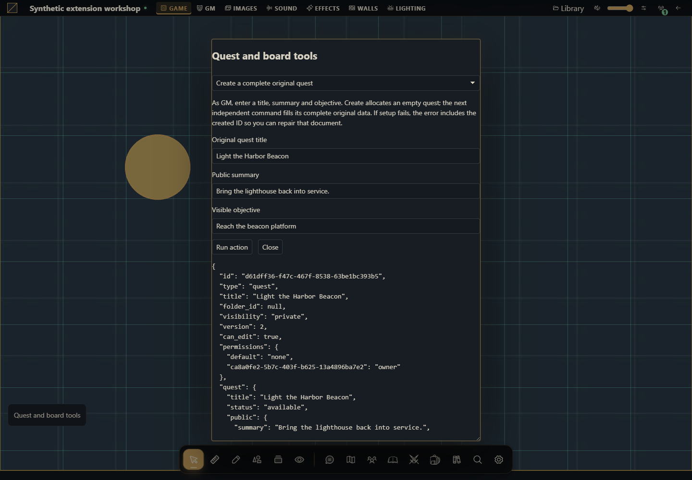

Como criar automações de missões e ações de quadro
Crie e leia uma missão real, avance objetivos, atribua atores e gerencie todos os vínculos do quadro.


O projeto que você vai criar
Crie um módulo para missão original do porto e quadro de trabalhos. Execute criar missão, copie o ID, leia IDs dos objetivos, conclua um deles e atribua personagem. Crie um quadro, vincule a missão, crie outra pelo quadro, fixe e ordene as duas e depois desvincule sem apagar conteúdo.
Host alvo: Gravewright 0.3.0. As ações rodam somente quando você clica Run action; leituras e escritas usam a conta conectada. O painel de demonstração está em inglês. Cada receita abaixo informa os dados de entrada e o resultado concreto.
1. Crie os arquivos
Crie uma pasta quests. Salve os arquivos mostrados abaixo em UTF-8, ou baixe o projeto completo. manifest.json fica na raiz. Não há dependências npm nem build de JavaScript.
quests/
manifest.json
main.mjs
recipes.mjs
styles.css
LICENSE.txtUse campanha descartável como mestre. Obtenha UUID legível de ator em Atores. Para compartilhar, use concessão e apresentação do gerenciador de diários; visibilidade do quadro e estados visíveis das missões são relevantes.
2. Empacote, instale e ative
Partindo da pasta do projeto, execute no PowerShell:
python -m json.tool manifest.json
python -m zipfile -c ../quests-1.0.0.zip manifest.json main.mjs recipes.mjs styles.css LICENSE.txt
python -m zipfile -l ../quests-1.0.0.zipNo Linux/macOS, substitua python por python3 no mesmo comando. A listagem precisa mostrar manifest.json na raiz. Como proprietário, abra Inside → Módulos → Instalar módulo → Instalar de ZIP, selecione o ZIP e clique Instalar. Como GM, abra a campanha, use o botão Gravewright da mesa → Extensions e clique Activate na versão 1.0.0 de Quest and board tools. Feche o menu e clique no botão Quest and board tools. Se precisar de detalhes de cada tela, veja seu primeiro módulo.
O projeto fica inativo até a seleção na mesa. Teste uma extensão de demonstração por vez, pois seus botões usam a mesma posição. Para novos bytes, mude version para 1.0.1, gere outro ZIP, instale e ative essa versão; não edite o pacote instalado.
3. Execute cada receita
Criar uma missão original completa
Como mestre, informe título, resumo e objetivo. Create cria a missão vazia; outro comando preenche seus dados originais completos. Se a configuração falhar, o erro inclui o ID criado para reparar esse documento.
async ({api,context,signal},v)=>{if(context.role!=='gm')throw new Error('GM required for the complete seed.');const created=await api.journals.create({title:v.title,journal_type:'quest'},{signal,requestId:crypto.randomUUID()});try{const data={status:'available',public:{summary:v.summary},gm:{},objectives:[{id:'beacon_platform',text:v.objective,completed:false,optional:false,visibleToPlayers:true,sortOrder:10}],rewards:[],tags:['tutorial'],assignees:[]};await api.journals.update({journal_id:created.journal_id,version:created.version,title:v.title,visibility:'private',data},{signal,requestId:crypto.randomUUID()});return api.journals.get(created.journal_id,{}, {signal});}catch(error){throw new Error('Quest '+created.journal_id+' was created; setup failed: '+(error.code||error.message)+'. Inspect it before creating another.');}}Resultado esperado: Uma missão privada disponível com um objetivo visível, UUID e versão.
Como conferir: Abra o diretório ou documento nativo e compare o estado do servidor. Compare mestre e jogador; apenas conteúdo autorizado pode aparecer.
Ler campos da missão e IDs de objetivo
Cole journal_id criado. Copie quest.objectives[].id para concluir um objetivo; a projeção do mestre também contém notas e segredos que jogadores não recebem.
async ({api,signal},v)=>{const row=await api.journals.get(v.id,{}, {signal});if(row.type!=='quest')throw new Error('Choose a quest.');return row;}Resultado esperado: A projeção autorizada da missão, não um registro direto do banco.
Como conferir: Abra o diretório ou documento nativo e compare o estado do servidor. Compare mestre e jogador; apenas conteúdo autorizado pode aparecer.
Avançar o estado da missão com revisão
Escolha um dos seis estados. A receita lê a versão uma vez, executa um comando e lê o resultado. Conflitos são informados sem tentativa automática.
async ({api,signal},v)=>{const row=await api.journals.get(v.id,{}, {signal});if(row.type!=='quest'||!['draft','available','active','completed','failed','archived'].includes(v.status))throw new Error('Choose a quest and valid status.');await api.journals.setStatus({journal_id:row.id,version:row.version,status:v.status},{signal,requestId:crypto.randomUUID()});return api.journals.get(row.id,{}, {signal});}Resultado esperado: A mesma missão com o estado solicitado e uma versão nova.
Como conferir: Mude uma missão disponível para draft e compare sua visibilidade no quadro do jogador.
Concluir ou reabrir um objetivo
Use o ID da receita de leitura, não o texto do objetivo. Completed é booleano. O servidor impede que jogadores escolham objetivos ocultos.
async ({api,signal},v)=>{const row=await api.journals.get(v.id,{}, {signal});if(row.type!=='quest')throw new Error('Choose a quest.');await api.journals.setObjective({journal_id:row.id,version:row.version,objective_id:v.objectiveId,completed:v.completed},{signal,requestId:crypto.randomUUID()});return api.journals.get(row.id,{}, {signal});}Resultado esperado: Somente o indicador de conclusão do objetivo escolhido muda.
Como conferir: Abra o diretório ou documento nativo e compare o estado do servidor. Compare mestre e jogador; apenas conteúdo autorizado pode aparecer.
Atribuir um personagem legível sem remover os atuais
Use um UUID do diretório ou API de atores. A receita mantém os atribuídos visíveis e adiciona um ID único; o servidor preserva atribuições ocultas de editores que não sejam mestres.
async ({api,signal},v)=>{await api.actors.get(v.actorId,{}, {signal});const row=await api.journals.get(v.id,{}, {signal});if(row.type!=='quest')throw new Error('Choose a quest.');await api.journals.assignCharacters({journal_id:row.id,version:row.version,assignees:[...new Set([...(row.quest.assignees||[]),v.actorId])]},{signal,requestId:crypto.randomUUID()});return api.journals.get(row.id,{}, {signal});}Resultado esperado: quest.assignees inclui o personagem, respeitando o limite de 32 personagens.
Como conferir: Abra o diretório ou documento nativo e compare o estado do servidor. Compare mestre e jogador; apenas conteúdo autorizado pode aparecer.
Criar um quadro vazio de missões
Crie um documento quest_board. Seus dados são vazios; vínculos a missões são entradas separadas do servidor. Copie o ID para as próximas ações.
async ({api,signal},v)=>{const created=await api.journals.create({title:v.title,journal_type:'quest_board'},{signal,requestId:crypto.randomUUID()});return api.journals.get(created.journal_id,{}, {signal});}Resultado esperado: Um quadro vazio com board_entries e UUID.
Como conferir: Abra o diretório ou documento nativo e compare o estado do servidor. Compare mestre e jogador; apenas conteúdo autorizado pode aparecer.
Criar e vincular uma missão pelo quadro
Cole o UUID do quadro. O comando nativo board-create cria uma missão disponível na pasta do quadro e vincula em uma operação no servidor.
async ({api,signal},v)=>{const board=await api.journals.get(v.id,{}, {signal});if(board.type!=='quest_board')throw new Error('Choose a quest board.');const result=await api.journals.createBoardQuest({journal_id:board.id,title:v.title},{signal,requestId:crypto.randomUUID()});return {result,board:await api.journals.get(board.id,{}, {signal})};}Resultado esperado: created_quest_id e as entradas atualizadas do quadro.
Como conferir: Abra o diretório ou documento nativo e compare o estado do servidor. Compare mestre e jogador; apenas conteúdo autorizado pode aparecer.
Vincular uma missão existente
Use UUID do quadro e de uma missão legível existente. A ação adiciona uma relação; não copia o conteúdo da missão.
async ({api,signal},v)=>{await api.journals.addQuest({journal_id:v.id,quest_id:v.questId},{signal,requestId:crypto.randomUUID()});return api.journals.get(v.id,{}, {signal});}Resultado esperado: A missão aparece uma vez em board_entries.
Como conferir: Abra o diretório ou documento nativo e compare o estado do servidor. Compare mestre e jogador; apenas conteúdo autorizado pode aparecer.
Fixar ou desafixar um cartão
Use uma missão já vinculada ao quadro. Pinned é booleano; cartões fixados aparecem antes dos demais.
async ({api,signal},v)=>{await api.journals.pinQuest({journal_id:v.id,quest_id:v.questId,pinned:v.pinned},{signal,requestId:crypto.randomUUID()});return api.journals.get(v.id,{}, {signal});}Resultado esperado: A entrada altera pinned e preserva os dados da missão.
Como conferir: Abra o diretório ou documento nativo e compare o estado do servidor. Compare mestre e jogador; apenas conteúdo autorizado pode aparecer.
Inverter a ordem completa do quadro
Como mestre, leia todas as entradas e envie cada ID uma vez, invertendo sort_order. A lista filtrada de um jogador não é a ordem completa. O comando valida o conjunto e rejeita mudanças concorrentes nos vínculos.
async ({api,context,signal},v)=>{if(context.role!=='gm')throw new Error('Use GM to read the complete board order.');const board=await api.journals.get(v.id,{}, {signal});if(board.type!=='quest_board')throw new Error('Choose a quest board.');const ids=[...board.board_entries].sort((a,b)=>a.sort_order-b.sort_order).map(entry=>entry.quest_id).reverse();await api.journals.reorderQuests({journal_id:board.id,ordered_quest_ids:ids},{signal,requestId:crypto.randomUUID()});return api.journals.get(board.id,{}, {signal});}Resultado esperado: As posições sort_order mudam; o grupo fixado mantém prioridade visual.
Como conferir: Abra o diretório ou documento nativo e compare o estado do servidor. Compare mestre e jogador; apenas conteúdo autorizado pode aparecer.
Desvincular cartão preservando a missão
Escolha a relação entre quadro e missão a remover. A ação não apaga o documento da missão.
async ({api,signal},v)=>{await api.journals.removeQuest({journal_id:v.id,quest_id:v.questId},{signal,requestId:crypto.randomUUID()});return {board:await api.journals.get(v.id,{}, {signal}),quest:await api.journals.get(v.questId,{}, {signal})};}Resultado esperado: O quadro deixa de vincular a missão; o documento original continua legível.
Como conferir: Abra o diretório ou documento nativo e compare o estado do servidor. Compare mestre e jogador; apenas conteúdo autorizado pode aparecer.
4. Entenda e adapte os arquivos completos
main.mjs desenha apenas o lançador e o formulário. recipes.mjs contém as ações: para adaptar o comportamento, altere a função run da receita desejada, mantendo sua assinatura. O formulário passa tipos reais (number, boolean e File), bloqueia requisições simultâneas e desenha resultados com textContent. Não há avaliação de código fornecido pelo usuário. api, host, assets e storage pertencem à montagem; signal cancela trabalho ao desativar. O modal não fecha durante uma operação pendente e é liberado ao abortar a montagem. A função de negócio continua responsável por revisões, permissões e sequência transacional.
manifest.json
{
"id": "tutorial.quests",
"name": "Quest and board tools",
"version": "1.0.0",
"sdk": {
"requires": ">=1.0.0 <2.0.0",
"tested": "1.0.0"
},
"entry": "main.mjs",
"description": "Create and read a real quest, advance objectives, assign actors and manage every board relationship.",
"author": "Gravewright documentation",
"license": "MIT"
}main.mjs
import {recipes} from './recipes.mjs';
export default {
start({styles}) { styles.use('styles.css'); },
register({register}) {
register("table.interface", ({root,api,host,assets,storage,context,events,viewport,signal,onDispose}) => {
const doc=root.ownerDocument;
const button=doc.createElement('button');
button.type='button';button.className='tutorial-launcher';
button.textContent="Quest and board tools";
root.append(button);
for(const type of ['pointerdown','mousedown'])button.addEventListener(type,event=>event.stopPropagation(),{signal});
let modal,pending=false;
button.addEventListener('click',event=>{
event.stopPropagation();
if(modal?.isConnected) { modal.focus();return; }
const panel=doc.createElement('section');
panel.className="tutorial-workbench-quests";
panel.setAttribute('role','dialog');panel.setAttribute('aria-modal','true');
panel.setAttribute('aria-label',button.textContent);panel.tabIndex=-1;
const title=doc.createElement('h2');title.textContent=button.textContent;panel.append(title);
const choose=doc.createElement('select');choose.setAttribute('aria-label','Action');
for(const recipe of recipes) {
const option=doc.createElement('option');option.value=recipe.id;option.textContent=recipe.label;choose.append(option);
}
const form=doc.createElement('form'),fields=doc.createElement('div');
const description=doc.createElement('p');
const run=doc.createElement('button');run.type='submit';run.textContent='Run action';
const close=doc.createElement('button');close.type='button';close.textContent='Close';
const output=doc.createElement('pre');output.setAttribute('role','status');output.setAttribute('aria-live','polite');
form.append(description,fields,run,close,output);panel.append(choose,form);
function renderFields(){
const recipe=recipes.find(item=>item.id===choose.value);fields.replaceChildren();
description.textContent=recipe.description;
for(const field of recipe.fields||[]) {
const label=doc.createElement('label');label.textContent=field.label;
const input=doc.createElement('input');input.name=field.name;input.type=field.type||'text';
if(field.type==='number')input.step=String(field.step??'any');
if(field.type==='checkbox')input.checked=!!field.value;
else if(field.type!=='file')input.value=String(field.value??'');
input.required=!!field.required;
if(field.accept)input.accept=field.accept;
label.append(input);fields.append(label);
}
output.textContent='';
}
choose.addEventListener('change',renderFields,{signal});renderFields();
form.addEventListener('submit',async event=>{
event.preventDefault();if(pending)return;
const recipe=recipes.find(item=>item.id===choose.value),values={};
for(const input of fields.querySelectorAll('input')) {
values[input.name]=input.type==='file'?input.files[0]:input.type==='checkbox'?input.checked:input.type==='number'?Number(input.value):input.value;
}
pending=true;choose.disabled=true;run.disabled=true;close.disabled=true;
for(const input of fields.querySelectorAll('input'))input.disabled=true;
output.textContent='Running…';
try {
const value=await recipe.run({api,host,assets,storage,context,events,viewport,signal,onDispose},values);
if(!signal.aborted)output.textContent=typeof value==='string'?value:JSON.stringify(value??null,null,2);
} catch(error) {
if(!signal.aborted)output.textContent=String(error.code||error.message||'unavailable');
} finally {
pending=false;
if(!signal.aborted){choose.disabled=false;run.disabled=false;close.disabled=false;for(const input of fields.querySelectorAll('input'))input.disabled=false;}
}
},{signal});
close.addEventListener('click',()=>void modal.close(),{signal});
modal=api.ui.openModal(panel,{canClose:()=>!pending||signal.aborted});
},{signal});
onDispose(()=>{button.remove();if(modal)void modal.close();});
});
},
stop() {}
};recipes.mjs
export const recipes=[
{
id:"create-quest",
label:"Create a complete original quest",
description:"As GM, enter a title, summary and objective. Create allocates an empty quest; the next independent command fills its complete original data. If setup fails, the error includes the created ID so you can repair that document.",
fields:[
{
"name": "title",
"label": "Original quest title",
"type": "text",
"value": "Light the Harbor Beacon",
"required": true
},
{
"name": "summary",
"label": "Public summary",
"type": "text",
"value": "Bring the lighthouse back into service.",
"required": true
},
{
"name": "objective",
"label": "Visible objective",
"type": "text",
"value": "Reach the beacon platform",
"required": true
}
],
run:async ({api,context,signal},v)=>{if(context.role!=='gm')throw new Error('GM required for the complete seed.');const created=await api.journals.create({title:v.title,journal_type:'quest'},{signal,requestId:crypto.randomUUID()});try{const data={status:'available',public:{summary:v.summary},gm:{},objectives:[{id:'beacon_platform',text:v.objective,completed:false,optional:false,visibleToPlayers:true,sortOrder:10}],rewards:[],tags:['tutorial'],assignees:[]};await api.journals.update({journal_id:created.journal_id,version:created.version,title:v.title,visibility:'private',data},{signal,requestId:crypto.randomUUID()});return api.journals.get(created.journal_id,{}, {signal});}catch(error){throw new Error('Quest '+created.journal_id+' was created; setup failed: '+(error.code||error.message)+'. Inspect it before creating another.');}}
},
{
id:"read-quest",
label:"Read quest fields and objective IDs",
description:"Paste the created journal_id. Copy quest.objectives[].id for the completion action; the GM projection also includes gm notes and secrets that players never receive.",
fields:[
{
"name": "id",
"label": "Document UUID",
"type": "text",
"value": "",
"required": true
}
],
run:async ({api,signal},v)=>{const row=await api.journals.get(v.id,{}, {signal});if(row.type!=='quest')throw new Error('Choose a quest.');return row;}
},
{
id:"status",
label:"Advance a quest status with its revision",
description:"Choose one of the six status values. This reads the current version once, performs one command and reads the result. A conflict is reported rather than retried.",
fields:[
{
"name": "id",
"label": "Document UUID",
"type": "text",
"value": "",
"required": true
},
{
"name": "status",
"label": "draft/available/active/completed/failed/archived",
"type": "text",
"value": "active",
"required": true
}
],
run:async ({api,signal},v)=>{const row=await api.journals.get(v.id,{}, {signal});if(row.type!=='quest'||!['draft','available','active','completed','failed','archived'].includes(v.status))throw new Error('Choose a quest and valid status.');await api.journals.setStatus({journal_id:row.id,version:row.version,status:v.status},{signal,requestId:crypto.randomUUID()});return api.journals.get(row.id,{}, {signal});}
},
{
id:"objective",
label:"Complete or reopen an objective",
description:"Use the ID from the read recipe, not the objective label. Completed is a boolean. The server prevents players from choosing hidden objective IDs.",
fields:[
{
"name": "id",
"label": "Document UUID",
"type": "text",
"value": "",
"required": true
},
{
"name": "objectiveId",
"label": "Objective ID",
"type": "text",
"value": "beacon_platform",
"required": true
},
{
"name": "completed",
"label": "Completed",
"type": "checkbox",
"value": true
}
],
run:async ({api,signal},v)=>{const row=await api.journals.get(v.id,{}, {signal});if(row.type!=='quest')throw new Error('Choose a quest.');await api.journals.setObjective({journal_id:row.id,version:row.version,objective_id:v.objectiveId,completed:v.completed},{signal,requestId:crypto.randomUUID()});return api.journals.get(row.id,{}, {signal});}
},
{
id:"assign",
label:"Assign a readable character without dropping existing assignments",
description:"Use an actor UUID from the Actors directory or actor API. The recipe keeps visible assignees and adds one unique ID; the server preserves assignments hidden from non-GM editors.",
fields:[
{
"name": "id",
"label": "Document UUID",
"type": "text",
"value": "",
"required": true
},
{
"name": "actorId",
"label": "Readable actor UUID to assign",
"type": "text",
"value": "",
"required": true
}
],
run:async ({api,signal},v)=>{await api.actors.get(v.actorId,{}, {signal});const row=await api.journals.get(v.id,{}, {signal});if(row.type!=='quest')throw new Error('Choose a quest.');await api.journals.assignCharacters({journal_id:row.id,version:row.version,assignees:[...new Set([...(row.quest.assignees||[]),v.actorId])]},{signal,requestId:crypto.randomUUID()});return api.journals.get(row.id,{}, {signal});}
},
{
id:"create-board",
label:"Create an empty quest board",
description:"Create a quest_board document. Its data is empty; links to quests are separate server-owned board entries. Copy its ID for the next actions.",
fields:[
{
"name": "title",
"label": "Quest board title",
"type": "text",
"value": "Harbor jobs",
"required": true
}
],
run:async ({api,signal},v)=>{const created=await api.journals.create({title:v.title,journal_type:'quest_board'},{signal,requestId:crypto.randomUUID()});return api.journals.get(created.journal_id,{}, {signal});}
},
{
id:"board-create-quest",
label:"Create and link a quest through the board",
description:"Paste the board UUID. The native board-create command creates an available quest in the board folder and links it in one server operation.",
fields:[
{
"name": "id",
"label": "Document UUID",
"type": "text",
"value": "",
"required": true
},
{
"name": "title",
"label": "New linked quest title",
"type": "text",
"value": "Repair the harbor bell",
"required": true
}
],
run:async ({api,signal},v)=>{const board=await api.journals.get(v.id,{}, {signal});if(board.type!=='quest_board')throw new Error('Choose a quest board.');const result=await api.journals.createBoardQuest({journal_id:board.id,title:v.title},{signal,requestId:crypto.randomUUID()});return {result,board:await api.journals.get(board.id,{}, {signal})};}
},
{
id:"board-add",
label:"Link an existing quest",
description:"Use the board UUID and an existing readable quest UUID. This adds a board relationship; it does not copy quest content.",
fields:[
{
"name": "id",
"label": "Document UUID",
"type": "text",
"value": "",
"required": true
},
{
"name": "questId",
"label": "Existing quest UUID",
"type": "text",
"value": "",
"required": true
}
],
run:async ({api,signal},v)=>{await api.journals.addQuest({journal_id:v.id,quest_id:v.questId},{signal,requestId:crypto.randomUUID()});return api.journals.get(v.id,{}, {signal});}
},
{
id:"board-pin",
label:"Pin or unpin a board card",
description:"Use a quest already linked to the chosen board. Pinned is boolean; pinned entries are displayed before ordinary entries.",
fields:[
{
"name": "id",
"label": "Document UUID",
"type": "text",
"value": "",
"required": true
},
{
"name": "questId",
"label": "Linked quest UUID",
"type": "text",
"value": "",
"required": true
},
{
"name": "pinned",
"label": "Pinned",
"type": "checkbox",
"value": true
}
],
run:async ({api,signal},v)=>{await api.journals.pinQuest({journal_id:v.id,quest_id:v.questId,pinned:v.pinned},{signal,requestId:crypto.randomUUID()});return api.journals.get(v.id,{}, {signal});}
},
{
id:"board-reorder",
label:"Reverse the complete board order",
description:"As GM, read every entry and submit every quest ID exactly once in reversed sort_order. A player’s filtered list is not a complete order. The native command validates the set and rejects concurrent membership changes.",
fields:[
{
"name": "id",
"label": "Document UUID",
"type": "text",
"value": "",
"required": true
}
],
run:async ({api,context,signal},v)=>{if(context.role!=='gm')throw new Error('Use GM to read the complete board order.');const board=await api.journals.get(v.id,{}, {signal});if(board.type!=='quest_board')throw new Error('Choose a quest board.');const ids=[...board.board_entries].sort((a,b)=>a.sort_order-b.sort_order).map(entry=>entry.quest_id).reverse();await api.journals.reorderQuests({journal_id:board.id,ordered_quest_ids:ids},{signal,requestId:crypto.randomUUID()});return api.journals.get(board.id,{}, {signal});}
},
{
id:"board-remove",
label:"Unlink a card while preserving its quest",
description:"Choose the board and quest relationship to remove. This is not journal deletion.",
fields:[
{
"name": "id",
"label": "Document UUID",
"type": "text",
"value": "",
"required": true
},
{
"name": "questId",
"label": "Quest UUID to unlink",
"type": "text",
"value": "",
"required": true
}
],
run:async ({api,signal},v)=>{await api.journals.removeQuest({journal_id:v.id,quest_id:v.questId},{signal,requestId:crypto.randomUUID()});return {board:await api.journals.get(v.id,{}, {signal}),quest:await api.journals.get(v.questId,{}, {signal})};}
}
];styles.css
.gw-module-root[data-module-id="tutorial.quests"] .tutorial-launcher { position: fixed; left: 16px; bottom: 112px; z-index: 10; padding: var(--space-3); border: 1px solid var(--border); border-radius: var(--radius-md); background: var(--surface); color: var(--text); font-size: 14px; pointer-events: auto; max-width: min(440px, calc(100vw - 32px)); white-space: normal; }
.tutorial-workbench-quests { width: min(640px, calc(100vw - 48px)); padding: var(--space-5); font-size: 14px; }
.tutorial-workbench-quests label { display: block; margin: var(--space-3) 0; }
.tutorial-workbench-quests input, .tutorial-workbench-quests select { display: block; width: 100%; margin-top: var(--space-2); }
.tutorial-workbench-quests pre { max-height: 360px; max-width: 100%; overflow: auto; white-space: pre-wrap; overflow-wrap: anywhere; }
.tutorial-workbench-quests button { margin-right: var(--space-3); }LICENSE.txt
MIT License
Copyright (c) 2026 Gravewright contributors
Permission is hereby granted, free of charge, to any person obtaining a copy
of this software and associated documentation files (the "Software"), to deal
in the Software without restriction, including without limitation the rights
to use, copy, modify, merge, publish, distribute, sublicense, and/or sell
copies of the Software, and to permit persons to whom the Software is
furnished to do so, subject to the following conditions:
The above copyright notice and this permission notice shall be included in all
copies or substantial portions of the Software.
THE SOFTWARE IS PROVIDED "AS IS", WITHOUT WARRANTY OF ANY KIND, EXPRESS OR
IMPLIED, INCLUDING BUT NOT LIMITED TO THE WARRANTIES OF MERCHANTABILITY,
FITNESS FOR A PARTICULAR PURPOSE AND NONINFRINGEMENT. IN NO EVENT SHALL THE
AUTHORS OR COPYRIGHT HOLDERS BE LIABLE FOR ANY CLAIM, DAMAGES OR OTHER
LIABILITY, WHETHER IN AN ACTION OF CONTRACT, TORT OR OTHERWISE, ARISING FROM,
OUT OF OR IN CONNECTION WITH THE SOFTWARE OR THE USE OR OTHER DEALINGS IN THE
SOFTWARE.5. Permissões, falhas e teste final
Criar e configurar usa comandos separados; uma falha de configuração informa o UUID criado em vez de ocultar o efeito parcial. Repare o documento antes de clicar criar novamente. Estado, objetivo e atribuição enviam a versão exata lida e não repetem conflitos automaticamente. Ordenar o quadro exige cada missão vinculada uma vez, incluindo rascunhos visíveis ao mestre. O servidor verifica propriedade e oculta campos privados. Verifique como jogador após alternar draft/available e concessões explícitas.
Como usar a IA para estender este projeto
Estenda o tutorial quests no Gravewright 0.3.0 com [fluxo]. Leia journals/services.py, types.py, data.py e frontend.json. Preserve estados nativos, IDs/booleanos de objetivos, limites de atribuídos e payloads dos vínculos do quadro. Não apague missão para desvincular cartão. Entregue receitas completas, informe criações parciais e teste projeções mestre/jogador, objetivos ocultos, versões exatas e conflitos de ordenação.